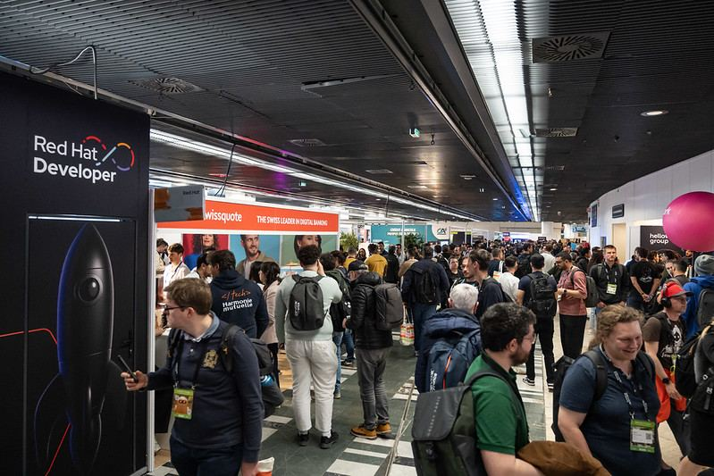

Conferences · Tech
Devoxx France 2027
- Dates
- –
- Venue
- Palais des Congrès, Paris
- Location
- Paris, France
- Format
- In-person
- Category
- Tech
- Industry
- Tech
- Organiser
- Devoxx France
- Official website
- https://www.devoxx.fr/
About
Dates are local to the host city (Central European Time, UTC+1 / UTC+2 in summer).
Topics: software development, Java, AI.
No organiser attendance figure found on the official pages fetched 24 Nov 2026. Ranked by our estimated size tier 'medium' (10,000-30,000 attendees/visits), a judgement from format, venue and scale, not an official number.
Sources
- Official — https://www.devoxx.fr/
Hotels
- Maison Albar Hôtel Le Champs-Élysées — 5★ · 3 avenue Mac-Mahon, 75017 Paris, France · 0.8 km from the venue · Price on request
- Hôtel Étoile Park — 5★ · 10 avenue Mac Mahon, 75017 Paris, France · 0.9 km from the venue · Price on request
- Hôtel L'Aventure — 5★ · 4 AVENUE VICTOR HUGO, 75116 Paris, France · 0.9 km from the venue · Price on request
- Le Méridien Paris Arc de Triomphe — 4★ · 81 boulevard Gouvion Saint Cyr, 75017 Paris, France · 0.1 km from the venue · Price on request
- Hyatt Regency Paris Étoile — 4★ · 3 place du Général Koenig, 75017 Paris, France · 0.2 km from the venue · Price on request · Venue page
Venue
- Palais des Congrès de Paris — Congress centre · 2 Place de la Porte Maillot, 75017 Paris · 3,723 capacity